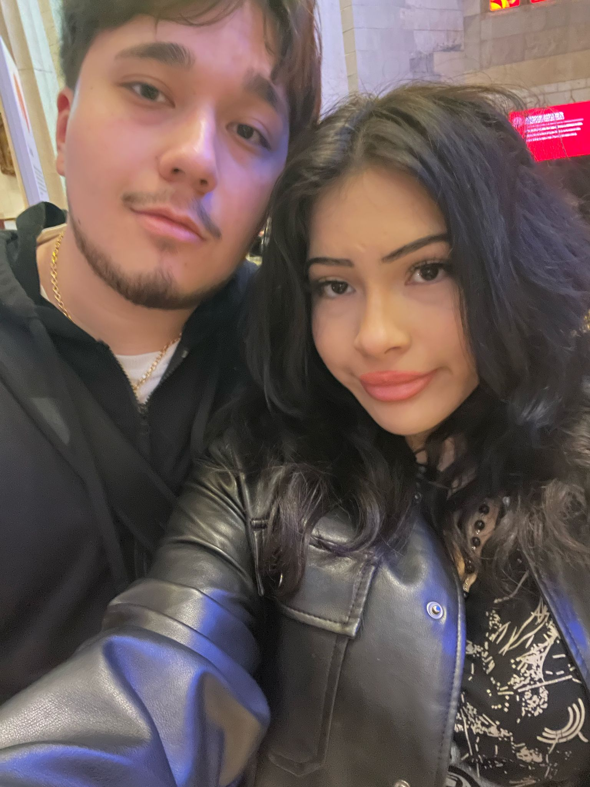
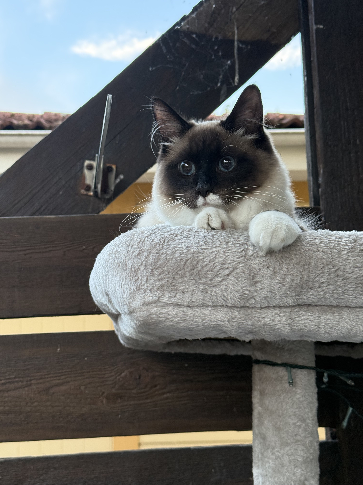
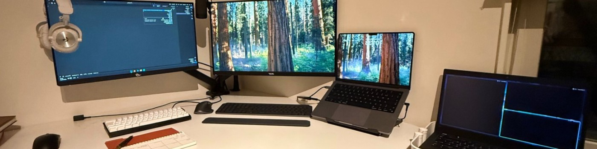

I'm a junior developer with an interest in systems, embedded development, and problem-solving.
I like learning by building real projects and challenging myself to understand how things work behind the scenes.
Currently, I'm learning C++ and diving deep into how low-level systems work.
Life Outside Code


When I'm not deep in code, I spend most of my time with my girlfriend and our cat. They keep me grounded
and remind me there's more to life than staring at screens all day. Though I do enjoy a good screen session,
having people (and a cat) who matter makes everything better.
My Setup

I dual boot Ubuntu and Windows on my main machine. I've experimented with a bunch of different Linux distros
over the years, but Arch was a bit too much for me to maintain day-to-day. Ubuntu gives me the stability I need
while still letting me tinker when I want to.
Keyboards

I'm really into mechanical keyboards. My current daily driver is a Keychron Q11 with Cream Yellow Pro switches
and blank black keycaps. It's tape modded for that deeper sound. There's something satisfying about building
and customizing your own keyboard exactly how you want it.
What I'm Into
Beyond coding and keyboard builds, I like experimenting with random tech projects, exploring new Linux tools
and workflows, and occasionally gaming. I'm always looking for new things to learn and build.